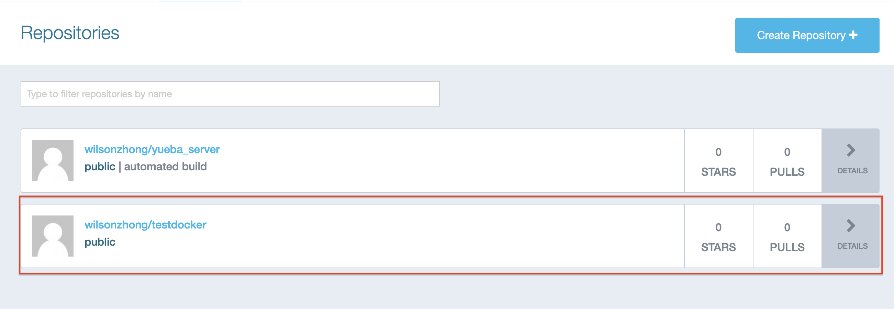
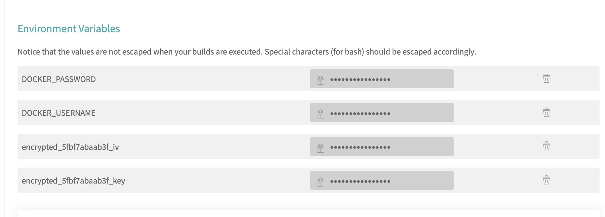

Github - Travis CI - Docker hub - VPS “不落地”云软件开发流水线实战
这周的web服务程序我选择完成的是一个具有注册、通过账户密码获取用户信息的一个通过sqlite3实现数据持久化的一个小demo，实践一下golang 中数据库的基本操作，程序方面这里不多谈，代码可见于我的Github仓库
因为AWS完成注册需要信用卡等信息，比较麻烦，这里使用的是我个人的一个do的vps进行替代，基本操作类似
这里主要说说一个很有意思的通过CI服务，实现Github - Travis CI - Docker hub - VPS “不落地”云软件开发流水线的一个实践，听起来好像十分高大上，但是细想一下，操作起来貌似并不是太难，我们只需要合理书写我们的.travis.yml，并在服务器上写好相应的部署脚本供ssh调用，我们就可以轻松实现push改动到github就可以通过travis ci实现Github - Travis CI - Docker hub - VPS的这么一个所谓“不落地”的Workflow，下面我说说我的具体流程
具体流程
Step1
首先，我们在Docker Hub上注册账户，建立我们对应的仓库如下 
Step2
然后我们开始编写我们build docker img需要使用到的Dockerfile
FROM golang:1.8 MAINTAINER WilsonZhong "1316628630@qq.com" WORKDIR $GOPATH/src/github.com/zhongwq/TestDocker ADD . $GOPATH/src/github.com/zhongwq/TestDocker RUN go get github.com/codegangsta/negroni RUN go get github.com/gorilla/mux RUN go get github.com/unrolled/render RUN go get github.com/mattn/go-sqlite3 RUN go get github.com/spf13/pflag RUN go build . EXPOSE 9999 ENTRYPOINT ["./TestDocker"]
dockerfile编写方面我参照的是go语言中文网的一个教程Docker学习笔记---Dockerfile，比较简单，大家若是需要可以参照教程进行编写
编写完成之后，我们可以现在本地执行docker build命令，看看有无错误产生，像我一开始忘记安装依赖再build，根据报错，我很快就改了回来，bug很快就消除了，只要我们跟着报错信息一步步做，很快就可以正确完成docker file的书写
完成了dockerfile后，就到了我们这最关键的.travis.yml了
language: go go: - 1.8 sudo: required services: - docker notifications: email: false install: - go get -u github.com/codegangsta/negroni - go get -u github.com/gorilla/mux - go get -u github.com/unrolled/render - go get -u github.com/mattn/go-sqlite3 script: - docker build --rm -t wilsonzhong/testdocker . before_install: - openssl aes-256-cbc -K $encrypted_5fbf7abaab3f_key -iv $encrypted_5fbf7abaab3f_iv -in id_rsa.enc -out ~/.ssh/id_rsa -d - chmod 600 ~/.ssh/id_rsa addons: ssh_known_hosts: 104.236.150.212 after_success: - docker login -u="$DOCKER_USERNAME" -p="$DOCKER_PASSWORD"; - docker tag wilsonzhong/testdocker:latest wilsonzhong/testdocker:latest - docker push wilsonzhong/testdocker:latest - ssh root@104.236.150.212 "cd ~ && sh build.sh"
这一步最关键的就是id_rsa的加密传输以及像\$DOCKER_USERNAME和\$DOCKER_PASSWORD 这样的不应该写在.travis.yml中却要使用的变量如何进行处理。这里travis给我们提供了一个很好的东西，我们可以在仓库的settings中设置我们的Environment Variables那么我们就可以在.travis.yml中通过$KEY使用对应的变量，像我们本次项目我们就可以把DOCKER_USERNAME和USER_PASSWORD放到我们的Environment Variables中 
至于加密文件，我们这里需要使用的是我们的ssh密钥以便travis ssh我们的服务器调用我们的更新脚本，所以我们需要通过travis加密我们链接我们服务器的密钥，首先我们在我们的电脑上安装travis，macOS下我们直接brew install travis即可，在linux下我们则需要使用gem进行安装,sudo apt install ruby ruby-dev && sudo gem install travis,安装完成之后，登陆travis, travis login, 在我们.travis.yml对应的目录执行如下命令
travis encrypt-file ~/.ssh/id_rsa --add
他就会自动把它添加到我们的.travis.yml中，内容如下
before_install: - openssl aes-256-cbc -K $encrypted_5fbf7abaab3f_key -iv $encrypted_5fbf7abaab3f_iv -in id_rsa.enc -out ~/.ssh/id_rsa -d - chmod 600 ~/.ssh/id_rsa // 该行需要自己添加
在这里我们还需要理解travis的钩子
before_install：install 阶段之前执行 before_script：script 阶段之前执行 after_failure：script 阶段失败时执行 after_success：script 阶段成功时执行 before_deploy：deploy 步骤之前执行 after_deploy：deploy 步骤之后执行 after_script：script 阶段之后执行
这里我们需要在script成功，即docker img被成功build传之后，上传我们新build的img并执行我们服务器上的部署脚本。我们只需在after_success部分加入对应的执行命令即可
after_success: - docker login -u="$DOCKER_USERNAME" -p="$DOCKER_PASSWORD"; - docker tag wilsonzhong/testdocker:latest wilsonzhong/testdocker:latest - docker push wilsonzhong/testdocker:latest - ssh root@104.236.150.212 "cd ~ && sh build.sh"
到这里，我们的.travis.yml就完成了
Step3
最后我们就剩下了编写服务器上的部署脚本，这个就需要我们根据我们自己的项目进行调整了
#!/bin/bash cd TestDocker git pull docker stop testdocker docker cp . testdocker:/go/src/github.com/zhongwq/TestDocker docker start testdocker echo "Starting service" docker exec testdocker /bin/bash -c \ "go build . && ./TestDocker > out.log 2>&1 &" echo "Deploy Done!"
编辑好了build.sh后，我们就可以通过ssh root@ip "cd ~ && sh build.sh"调用服务器上的更新脚本了
Summary
这次作业，是在上次使用travis进行集成测试之上的一次更好的深化，t通过合理利用travis ci,我们就可以高效率完成服务器上服务的更新。大大增加了我们的效率。Github - Travis CI - Docker hub - VPS “不落地”云软件开发流水线实战就说到这里，至于curl和hey的测试，大家可以在项目的README中看到。